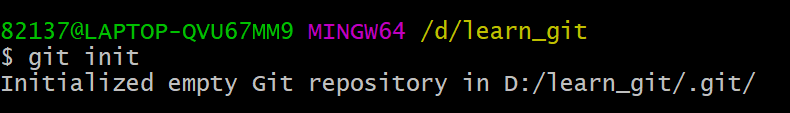
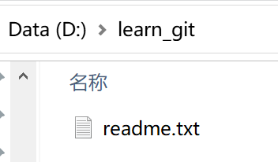
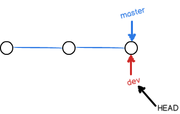
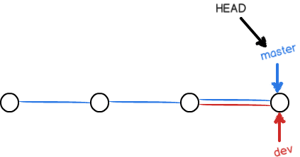
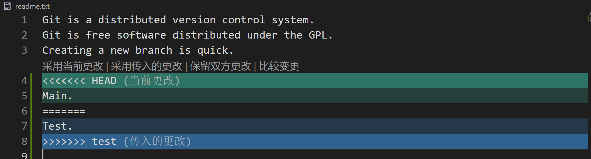

Git 学习笔记
前言
最近用 Hexo 写博客，每天都和 Git Bash 打交道，但是由于我只会看别人的教程机械式的模仿操作，完全不知道我的网站是怎么被提交到 GitHub 上的，因此也借机学习一下 Git。这篇学习笔记是我在 廖雪峰的网站 学习使用 Git 时的总结（大多是搬运，读者可以选择直接看 原教程）。
概述
Git 是目前世界上最先进的分布式版本控制系统，可以帮助自动记录每个版本的改动，并让其他人协助编辑。
集中式与分布式的区别
网站上的说明很详细，这里直接引用：
集中式版本控制系统，版本库是集中存放在中央服务器的，而干活的时候，用的都是自己的电脑，所以要先从中央服务器取得最新的版本，然后开始干活，干完活了，再把自己的活推送给中央服务器。中央服务器就好比是一个图书馆，你要改一本书，必须先从图书馆借出来，然后回到家自己改，改完了，再放回图书馆。
最大问题：必须联网，网速慢时令人自闭；中央服务器出问题时，所有人都无法工作。
分布式版本控制系统根本没有“中央服务器”，每个人的电脑上都是一个完整的版本库，这样，你工作的时候，就不需要联网了，因为版本库就在你自己的电脑上。既然每个人电脑上都有一个完整的版本库，那多个人如何协作呢？比方说你在自己电脑上改了文件A，你的同事也在他的电脑上改了文件A，这时，你们俩之间只需把各自的修改推送给对方，就可以互相看到对方的修改了。
优点：安全性高，强大的分支管理。
分布式版本控制系统通常也有一台充当“中央服务器”的电脑，但这个服务器的作用仅仅是用来方便“交换”大家的修改，没有它大家也一样干活，只是交换修改不方便而已。
Git 的安装
这里只说 Windows 下的安装，通过 Git 官网中的 下载链接 即可安装，安装完成后，可以通过开始菜单/右击某个文件夹并选择“Git Bash Here”来进入 Bash，并输入
$ git config --global user.name "Your Name"
$ git config --global user.email "email@example.com"来设置用户签名，这里建议把 user.name 和 user.email 设成 GitHub 的用户名和邮箱，注意：这里设置用户签名和将来登录 GitHub（或其他代码托管中心）的账号没有任何关系。
命令的 --global 参数，表示你这台机器上所有的 Git 仓库都会使用这个签名，签名的作用是区分不同操作者身份。用户的签名信息在每一个版本的提交信息中能够看到，以此确认本次提交是谁做的。 Git 首次安装必须设置一下用户签名，否则无法提交代码。
创建版本库
版本库又名仓库（repository），仓库中的所有文件都会被 Git 管理。
建立仓库
首先新建文件夹作为仓库的目录，如我在 D 盘下新建了 learn_git 文件夹，右键选择 Git Bash Here，之后输入 git init 即可成功创建一个仓库，如图。

该命令会在目录下创建一个 .git 目录，可以在 git bash 下使用 ll -a 或者 ls -al 命令查看。
在仓库中加入文件
在目录中加入要添加的文件，如 readme.txt，之后用 git add 命令把文件添加到仓库
$ git add readme.txt再用 git commit 命令把文件提交到仓库（必须要两步，add 和 commit）
$ git commit -m "wrote a readme file"其中，-m 参数后面的参数为本次提交的说明（message），执行成功后显示
[master (root-commit) d8b9fc1] wrote a readme file
1 file changed, 2 insertions(+)
create mode 100644 readme.txt表明改动了一个文件，添加了两行
注：可以一次添加多个文件后再一次性提交，如
$ git add file1.txt
$ git add file2.txt file3.txt
$ git commit -m "add 3 files."Git 的使用
查看修改
开始时 readme.txt 中的内容为：
Git is a version control system.
Git is free software.我们将其修改为：
Git is a distributed version control system.
Git is free software.此时可以用 git status 命令查看是否存在修改：
$ git status
On branch master
Changes not staged for commit:
(use "git add <file>..." to update what will be committed)
(use "git restore <file>..." to discard changes in working directory)
modified: readme.txt
no changes added to commit (use "git add" and/or "git commit -a")modified: readme.txt 说明该文件被修改过了，no changes added to commit 说明我们的修改还没有提交。
这时可以用 git diff <file> 命令查看具体的修改内容，显示的格式正是 Unix 通用的 diff 格式（后面有对该格式的说明），如下：
$ git diff readme.txt
diff --git a/readme.txt b/readme.txt
index d8036c1..013b5bc 100644
--- a/readme.txt
+++ b/readme.txt
@@ -1,2 +1,2 @@
-Git is a version control system.
+Git is a distributed version control system.
Git is free software.
\ No newline at end of file如果我们希望把修改提交，可以先：
$ git add readme.txt再查看一下状态，得到：
$ git status
On branch master
Changes to be committed:
(use "git restore --staged <file>..." to unstage)
modified: readme.txt告诉我们有被修改的文件 readme.txt 需要被提交，此时提交即可得到：
$ git commit -m "add distributed"
[master 1dba31f] add distributed
1 file changed, 1 insertion(+), 1 deletion(-)再查看状态：
$ git status
On branch master
nothing to commit, working tree clean说明没有要提交的修改。
diff 格式
diff 文件格式有列举格式、命令格式和上下文格式。上面显示的是上下文格式，下面进行解读：
前两行为 diff 命令。
第三、四两行表示了 diff 显示的是哪两个文件间的差异，其中 --- 表示更改之前的文件，+++ 表示更改之后的文件。
@@ 表示一个区块的开始，这个区块到下一个 @@ 为止。
-1，2表示原文件的第 1 行到第 2 行间；+1，2表示新文件的第 1 行到第 2 行间。
之后前面带 - 号的行，表示删除了，带 + 号的行表示增加了，前面什么都没有的表示没有改变。
版本回退
用 git log 命令查看 readme.txt 文件共有几个版本被提交到了仓库：
$ git log
commit 1dba31f444ea3fa6ef77835e7cfb5a54389f83c1 (HEAD -> master)
Author: xkz0777 <821376043@qq.com>
Date: Wed Jul 28 18:18:49 2021 +0800
add distributed
commit d8b9fc12170b4ff1df379ede389d38435a46aab1
Author: xkz0777 <821376043@qq.com>
Date: Wed Jul 28 16:55:02 2021 +0800
wrote a readme file该命令显示从最近到最远的提交日志，共两次，如果希望输出简单在一行内，可以加上 --pretty=oneline 参数：
$ git log --pretty=oneline
1dba31f444ea3fa6ef77835e7cfb5a54389f83c1 (HEAD -> master) add distributed
d8b9fc12170b4ff1df379ede389d38435a46aab1 wrote a readme file那一大串看起来像乱码的东西是 commit id（版本号）是一串十六进制的数字。
进行版本回退：在 Git 中，用 HEAD 表示当前版本，HEAD^ 表示上一个版本，以此类推，HEAD^^^ 表示前三个版本，往前 100 个版本可以写成 HEAD~100 ，回退使用 git reset 命令：
$ git reset --hard HEAD^
HEAD is now at d8b9fc1 wrote a readme file看一下内容：
$ cat readme.txt
Git is a version control system.
Git is free software.此时会发现在 git log 中找不到 add distributed 版本了：
$ git log
commit d8b9fc12170b4ff1df379ede389d38435a46aab1 (HEAD -> master)
Author: xkz0777 <821376043@qq.com>
Date: Wed Jul 28 16:55:02 2021 +0800
wrote a readme file如果要回到该版本，可以使用版本号（只要使用前六位即可）：
$ git reset --hard 1dba31
HEAD is now at 1dba31f add distributed再看一下内容：
$ cat readme.txt
Git is a distributed version control system.
Git is free software.如果找不到版本号，还可以使用 git reflog 命令：
$ git reflog
1dba31f (HEAD -> master) HEAD@{0}: reset: moving to 1dba31
d8b9fc1 HEAD@{1}: reset: moving to HEAD^
1dba31f (HEAD -> master) HEAD@{2}: commit: add distributed
d8b9fc1 HEAD@{3}: commit (initial): wrote a readme file可以由 1dba31f (HEAD -> master) HEAD@{2}: commit: add distributed 得知 add distributed 版本的版本号为 1dba31f
工作区和暂存区
工作区是电脑上可看到的目录：

在工作区的目录下有一个隐藏目录 .git，称为 Git 的版本库，里面存有称为 stage（或者叫 index）的暂存区，还有 Git 为我们自动创建的第一个分支 master，以及指向 master 的指针 HEAD。
前面讲了我们把文件往 Git 版本库里添加的时候，是分两步执行的：
第一步是用 git add 把文件添加进去，实际上就是把文件修改添加到暂存区；
第二步是用 git commit 提交更改，实际上就是把暂存区的所有内容提交到当前分支。
Git 管理的是修改而不是文件
如果修改了文件，但是没有先用 git add 把文件添加进去，而是直接用 git commit 提交更改，是不会成功提交修改的。
撤销修改
假如我们把文件内容修改成了
Git is a distributed version control system.
Git is free software distributed under the GPL.
Git has a mutable index called stage.
Git tracks changes of files.
My stupid boss still prefers SVN.此时要撤销修改，分三种情况（事实上，只要都按照 git status 给出的提示来就可以了）：
还未把文件提交到暂存区
输入 git status：
$ git status
On branch master
Changes not staged for commit:
(use "git add <file>..." to update what will be committed)
(use "git restore <file>..." to discard changes in working directory)
modified: readme.txt
no changes added to commit (use "git add" and/or "git commit -a")按照提示，如果我们希望提交修改，依然使用 git add 命令即可，撤销修改则使用 git restore 命令：
$ git restore readme.txt查看文件内容：
$ cat readme.txt
Git is a distributed version control system.
Git is free software.可以发现又回到了修改前的 add distributed 版本。
已经把文件提交到暂存区，但还未提交版本库
$ git status
On branch master
Changes to be committed:
(use "git restore --staged <file>..." to unstage)
modified: readme.txt按照提示，使用 git restore --staged 命令撤销修改：
$ git restore --staged readme.txt此时查看文件内容其实还是修改后的内容，但是文件已经被从暂存区中移除：
$ cat readme.txt
Git is a distributed version control system.
Git is free software distributed under the GPL.
Git has a mutable index called stage.
Git tracks changes of files.
My stupid boss still prefers SVN.
$ git status
On branch master
Changes not staged for commit:
(use "git add <file>..." to update what will be committed)
(use "git restore <file>..." to discard changes in working directory)
modified: readme.txt
no changes added to commit (use "git add" and/or "git commit -a")容易发现，我们回到了“还未把文件提交到暂存区”的状态，只要重复上述操作即可。
提交到了版本库
如果还未把自己的本地版本库推送到远程版本库，可以选择之前的版本回退，可以直接使文件回到最开始的状态，不用再重复前面的操作，但是如果已经提交到远程版本库，就无力回天了。
删除文件
如果直接在工作区中删除了 readme.txt 文件，会发现：
$ rm readme.txt
$ git status
On branch master
Changes not staged for commit:
(use "git add/rm <file>..." to update what will be committed)
(use "git restore <file>..." to discard changes in working directory)
deleted: readme.txt
no changes added to commit (use "git add" and/or "git commit -a")可以用 git restore 命令来恢复工作区中的文件
$ git restore readme.txt
$ cat readme.txt
Git is a distributed version control system.
Git is free software.如果确实要从版本库中删除该文件，需要两步：
首先使用 git rm 命令：
$ git rm readme.txt
rm 'readme.txt'查看状态：
$ git status
On branch master
Changes to be committed:
(use "git restore --staged <file>..." to unstage)
deleted: readme.txt之后提交修改即可
$ git commit -m "remove readme.txt"
[master 7a8ed60] remove readme.txt
1 file changed, 2 deletions(-)
delete mode 100644 readme.txt用 git log 查看版本：
$ git log
commit 7a8ed60e54f4c211a49fead874750a0d9fcc2db1 (HEAD -> master)
Author: xkz0777 <821376043@qq.com>
Date: Wed Jul 28 20:04:59 2021 +0800
remove readme.txt
commit 1dba31f444ea3fa6ef77835e7cfb5a54389f83c1
Author: xkz0777 <821376043@qq.com>
Date: Wed Jul 28 18:18:49 2021 +0800
add distributed
commit d8b9fc12170b4ff1df379ede389d38435a46aab1
Author: xkz0777 <821376043@qq.com>
Date: Wed Jul 28 16:55:02 2021 +0800
wrote a readme file可以发现提交了一个新的版本“remove readme.txt”，此时已经成功删除了版本库和工作区中的 readme.txt 文件。如果误删，依然可以选择版本回退。
此外，如果希望只删除暂存区的文件，但是保留工作区的文件，可以使用 git rm -r --cached
远程仓库
远程仓库可以是服务器，或者专门提供 Git 仓库托管的网站，如 Gitee、GitHub、GitLab 等，下面介绍如何将 Git 仓库放到 GitHub 上托管，其他托管网站方式也都相同。
通过 SSH 连接 GitHub
首先需要生成 ssh 秘钥（示例中的邮箱换成自己的）：
$ ssh-keygen -t rsa -C "821376043@qq.com"
Generating public/private rsa key pair.
Enter file in which to save the key (/c/Users/82137/.ssh/id_rsa):之后只要敲回车就会选择括号里默认的路径（也即 /c/Users/82137/.ssh/id_rsa）来存储 SSH 的公钥和私钥，之后登陆 GitHub，在“Account settings”中的“SSH and GPG keys”项中，选择“New SSH key”，在“Key”一栏中填入 id_rsa.pub 文件（即公钥）的内容即可。
注：通常 ssh 秘钥存储的路径为用户目录下的 .ssh 目录。
传到 GitHub 上免费托管的 Git 仓库是对所有人可见的，但只有自己能够修改。如果不希望仓库中的内容被他人看到，则需要付费将公开的仓库变成私有的。
创建并连接仓库
在 GitHub 中创建名为 learn_git 的仓库（repository），之后用 git remote add 命令连接：
$ git remote add origin https://github.com/xkz0777/learn_git.git其中 origin 为远程库的名字（Git 默认取名为 origin，也可以取自己的名字），然后用 git push -u origin branch_name 命令提交仓库。
几个注意点：
-
也可以用
git@github.com:xkz0777/learn_git.git，该地址使用的是 ssh 协议，而上面的例子使用的是 https 协议，相比之下 ssh 协议速度更快。 -
不要搭梯子，否则需要在 Git 中设置代理才能成功上传，不然会出现
fatal: unable to access 'https://github.com/xkz0777/learn_git.git/': OpenSSL SSL_read: Connection was reset, errno 10054的错误提示。 -
老版的教材中用的是
git push -u origin master命令，但现在 GitHub 新的仓库默认的分支为main分支（把 master 改名成 main 了），所以应该提交到main分支上才不会报错，错误示范：$ git push -u origin master error: src refspec master does not match any error: failed to push some refs to 'https://github.com/xkz0777/learn_git.git' -
如果出现提交到
main分支也出现类似上面错误的情况（没错我也遇到了），那么需要输入命令：$ git branch -m main -
如果不小心在第一步
git remote add过程中连接错了仓库，或者希望修改远程库名字，可以用git remote rm命令删除连接，使用前，建议先用git remote -v查看远程库信息：$ git remote -v origin git@github.com:xkz0777/learn_git.git (fetch) origin git@github.com:xkz0777/learn_git.git (push) -
再重新建立新的连接：
$ git remote rm origin -
只有第一次推送时需要使用
git push -u origin main，之后只要用git push命令即可。
从远程库克隆
在 GitHub 中创建名为 gitskills 的仓库（repository），并勾选“Add a README file”，现在，远程库已经准备好了，下一步是用命令 git clone 克隆一个本地库：
$ git clone git@github.com:xkz0777/gitskills.git
Cloning into 'gitskills'...
remote: Enumerating objects: 3, done.
remote: Counting objects: 100% (3/3), done.
remote: Total 3 (delta 0), reused 0 (delta 0), pack-reused 0
Receiving objects: 100% (3/3), done.完成后，在我们的 learn_git 目录下会有 gitskills 目录，里面有 GitHub 自动生成的 README.md 文档。
拉取远程库内容
使用 git pull 命令：git pull 远程库地址别名 远程分支名:本地分支名。该方式需要已经用 git remote add 命令连接过远程仓库。
如果当前的库已经是之前 git clone 来的，只要输入 git pull 即可自动更新。
分支管理
分支的作用：
假设你准备开发一个新功能，但是需要两周才能完成，第一周你写了50%的代码，如果立刻提交，由于代码还没写完，不完整的代码库会导致别人不能干活了。如果等代码全部写完再一次提交，又存在丢失每天进度的巨大风险。
现在有了分支，就不用怕了。你创建了一个属于你自己的分支，别人看不到，还继续在原来的分支上正常工作，而你在自己的分支上干活，想提交就提交，直到开发完毕后，再一次性合并到原来的分支上，这样，既安全，又不影响别人工作。
对每次 commit，Git 都把它们串成一条时间线，这条时间线就是一个分支。截止到目前，只有一个主分支，即 main 分支。HEAD 严格来说不是指向提交，而是指向 main，main 才是指向提交的，所以，HEAD 指向的就是当前分支。

一开始的时候，main 分支是一条线，Git 用 main 指向最新的提交，再用 HEAD 指向 main，就能确定当前分支，以及当前分支的提交点，每次提交，main 分支都会向前移动一步，这样，随着你不断提交，main 分支的线也越来越长。
当我们创建新的分支，例如 dev 时，Git 新建了一个指针叫 dev，指向 main 相同的提交，再把 HEAD 指向 dev ，就表示当前分支在 dev 上。从现在开始，对工作区的修改和提交就是针对 dev 分支了，比如新提交一次后，dev 指针往前移动一步，而 main 指针不变，假如我们在 dev 上的工作完成了，就可以把 main 指向 dev 的当前提交，就完成了 dev 和 main 的合并。还可以删掉 dev 指针从而删掉 dev 分支。



创建、切换分支
使用 git branch 命令创建、查看分支：
$ git branch dev
$ git branch
dev
* main其中当前分支前会有“*”号
用 git checkout 命令切换分支：
$ git checkout dev
Switched to branch 'dev'
$ git branch
* dev
main可以发现当前分支变成了 dev
也可以使用 git checkout -b dev 命令，创建并切换成 dev 分支，如：
$ git checkout -b test
Switched to a new branch 'test'
$ git branch
dev
main
* test把 readme.txt 文件修改为
Git is a distributed version control system.
Git is free software distributed under the GPL.
Creating a new branch is quick.之后可以进行提交：
82137@LAPTOP-QVU67MM9 MINGW64 /d/learn_git (test)
$ git add readme.txt
$ git commit -m "branch test"
[test 0577331] branch test
1 file changed, 2 insertions(+), 1 deletion(-)注意右上角的括号里也说明当前的分支为 test
再切换回 main 分支：
$ git checkout main
Switched to branch 'main'
$ cat readme.txt
Git is a distributed version control system.
Git is free software distributed under the GPL.可以发现该分支下的 readme.txt 文件并没有被更改。
注：新版的 Git 提供了 switch 命令来切换分支（替代了 checkout 命令）：
git switch -c 创建并切换 git switch 切换到已有分支。
合并分支
使用 git merge 命令合并分支：
$ git merge test
Updating d71d777..0577331
Fast-forward
gitskills | 1 +
readme.txt | 3 ++-
2 files changed, 3 insertions(+), 1 deletion(-)
create mode 160000 gitskills把 test 分支并入了当前分支（main 分支）。
删除分支
使用 git branch -d 命令删除分支：
$ git branch
dev
* main
test
$ git branch -d dev
Deleted branch dev (was d71d777).
$ git branch
* main
test因为创建、合并和删除分支非常快，所以 Git 鼓励你使用分支完成某个任务，合并后再删掉分支，这和直接在 main 分支上工作效果是一样的，但过程更安全。
合并冲突
我们当前有 main 和 test 两个分支，假如两个分支下的 readme.txt 文件都被修改过，那么合并时就会产生冲突，如：在 main 分支下，加上一行 Main. 并提交，在 test 分支下加上一行 Test. 并提交。
$ git merge test
Auto-merging readme.txt
CONFLICT (content): Merge conflict in readme.txt
Automatic merge failed; fix conflicts and then commit the result.Git 告诉我们，合并时出现了冲突，自动合并失败，需要我们手动解决冲突。
在 vsCode 中打开 readme.txt 文件，可以看到

可以选择一种方式，或者手动更改文件，之后再提交即可：
$ git add readme.txt
$ git commit -m "conflict fixed"
[main 01eb953] conflict fixed其他分支管理的内容比较高级，这里略过。
标签管理
标签的作用：为 commit id 取一个别名，是指向某个 commit 的指针，可以起到如下效果：
“请把上周一的那个版本打包发布，commit 号是 6a5819e…”
“一串乱七八糟的数字不好找！”
如果换一个办法：
“请把上周一的那个版本打包发布，版本号是 v1.2”
“好的，按照 tag v1.2 查找 commit 就行！”
打标签
首先，切换到需要打标签的分支上，并使用 git tag 命令打标签，如在 main 分支下：
$ git tag v1.0用 git tag 查看所有标签：
$ git tag
v1.0默认标签是打在最新提交的 commit 上的，也可以针对某一个 commit 来打标签，只要找到其 commit id 即可：
$ git tag v0.9 79db
$ git log
commit 01eb953bec5bf36c5d1b1a938976904551832358 (HEAD -> main, tag: v1.0)
Author: xkz0777 <821376043@qq.com>
Date: Thu Jul 29 19:55:02 2021 +0800
conflict fixed
commit 79db4a171be761dc9ab31037542404d03ab9df92 (tag: v0.9)
Merge: 287cc09 eb59e2c
Author: xkz0777 <821376043@qq.com>
Date: Thu Jul 29 19:54:10 2021 +0800
conflict fixed用 git log 查看可以发现，commit id 为 79db4a 的 commit 已经被打上了 v0.9 的标签。
注意，使用 git tag 命令查看标签时，标签不是按时间顺序列出，而是按字母排序的。可以用 git show <tagname> 查看标签信息。
还可以创建带有说明的标签，用 -a 指定标签名，-m 指定说明文字：
$ git tag -a v0.1 -m "version 0.1 released" 287cc0注意：标签总是和某个 commit 挂钩。如果这个 commit 既出现在 main 分支，又出现在 dev 分支，那么在这两个分支上都可以看到这个标签。
删除标签
用 git tag -d 命令删除标签：
$ git tag
v0.1
v0.9
v1.0
$ git tag -d v0.9
Deleted tag 'v0.9' (was 79db4a1)
$ git tag
v0.1
v1.0因为创建的标签都只存储在本地，不会自动推送到远程。所以，打错的标签可以在本地安全删除。
如果要推送某个标签到远程，使用命令 git push origin <tagname>。
或者，一次性推送全部尚未推送到远程的本地标签：
$ git push origin --tags
Warning: Permanently added the RSA host key for IP address '192.30.255.112'
to the list of known hosts.
Enumerating objects: 20, done.
Counting objects: 100% (20/20), done.
Delta compression using up to 16 threads
Compressing objects: 100% (18/18), done.
Writing objects: 100% (18/18), 1.70 KiB | 580.00 KiB/s, done.
Total 18 (delta 5), reused 0 (delta 0), pack-reused 0
remote: Resolving deltas: 100% (5/5), done.
To github.com:xkz0777/learn_git.git
* [new tag] v0.1 -> v0.1
* [new tag] v1.0 -> v1.0如果标签已经推送到远程，要删除远程标签就麻烦一点，先从本地删除：
$ git tag -d v0.1
Deleted tag 'v0.1' (was 064b8c0)然后，从远程删除。删除命令也是push，但是格式如下：
$ git push origin :refs/tags/v0.1
remote: warning: Deleting a non-existent ref.
To github.com:xkz0777/learn_git.git
- [deleted] v0.1忽略特殊文件
在工作区根目录下添加 .gitignore 文件，在该文件里的所有文件都不会被 git add 到暂存区中，如果确实要添加，可以增加 -f 参数同时 git status 也不会显示 “untracked files”，通配符 * 可以用于匹配任何字符，** 则可以用于递归查找。
可以用 ! +文件名的方式排除特定文件
.gitignore 文件本身要放到版本库里，并且可以对 .gitignore 做版本管理。
Git 常用命令总结
最基础的命令：
| 命令 | 作用 |
|---|---|
| git add <directory> | 将指定目录的所有修改加入暂存区中。也可把<directory>替换成<file> |
| git commit -m “message” | 将暂存区的内容提交到版本库 |
| git status | 查看状态 |
| git log | 显示全部提交历史 |
| git reflog | 可以查看回退后之前的版本号 |
| git init <directory> | 在指定的目录下创建⼀个空的 repo。不带参数将在当前目录下创建⼀个 repo |
| git clone <repo> | 克隆⼀个指定repo到本地 |
| git config user.name <name> | 针对当前 repo 配置用户名。使用 --global 参数将配置全局用户名 |
| git reflog | 显示本地 repo 的所有 commit 日志 |
| git branch | 显示所有分支 |
| git branch <branchname> | 创建分支 |
| git switch | 切换到某分支，加上 -c 参数创建并切换到某分支 |
| git remote add | 连接远程仓库 |
| git remote -v | 查看远程库信息 |
| git remote rm | 删除与远程仓库的连接 |
| git push -u origin main | 第一次向远程仓库提交，之后可以简化为 git push |
| git clone | 克隆远程库到本地 |
diff 命令：
| 命令 | 作用 |
|---|---|
| git diff | 比较工作区和暂存区的修改 |
| git diff HEAD | 比较工作区和上一次 commit 后的修改 |
| git diff --cached | 比较暂存区和上一次 commit 后的修改 |
restore 命令：
| 命令 | 作用 |
|---|---|
| git restore | 撤销修改（还未把文件提交到暂存区） |
| git restore --staged | 撤销修改（已经把文件提交到暂存区，但还未提交版本库） |
reset 命令
| 命令 | 作用 |
|---|---|
| git reset <file> | 将<file>从暂存区移除，但保持工作区不变 |
| git reset | 移除所有暂存区的修改，但不会修改工作区 |
| git reset --hard | 移除所有暂存区的修改，并强制删除所有工作作区的修改 |
| git reset <commit> | 将当前分支回滚到指定<commit>，清除暂存区的修改，但保持工作区状态不变 |
| git reset --hard <commit> | 将当前分支回滚到指定<commit>，清除暂存区的修改，并强制删除所有工作区的修改 |